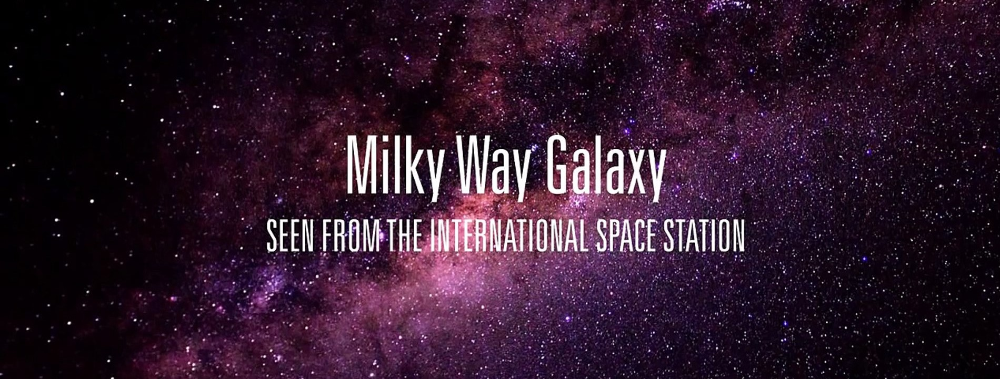

.jpg)

Mercury is the smallest planet in our solar system. It’s just a little bigger than Earth’s moon. It is the closest planet to the sun, but it’s actually not the hottest. Venus is hotter
Learn MoreVenus is the second planet from the Sun, and is Earth's closest neighbor in the solar system. Venus is the brightest object in the sky after the Sun and the Moon
Learn More
Earth, our home, is the third planet from the sun. It's the only planet known to have an atmosphere containing free oxygen, oceans of water on its surface and, of course, life
Learn MoreMars is the fourth planet from the Sun and is the second smallest planet in the solar system
Learn MoreJupiter is the largest planet in the solar system. Fittingly, it was named after the king of the gods in Roman mythology. In a similar manner, the ancient Greeks named the planet after Zeus, the king of the Greek pantheon.
Learn MoreSaturn is the sixth planet from the Sun and the second largest planet in our solar system.
Learn More
Neptune is dark, cold, and very windy. It's the last of the planets in our solar system. It's more than 30 times as far from the sun as Earth is
Learn More